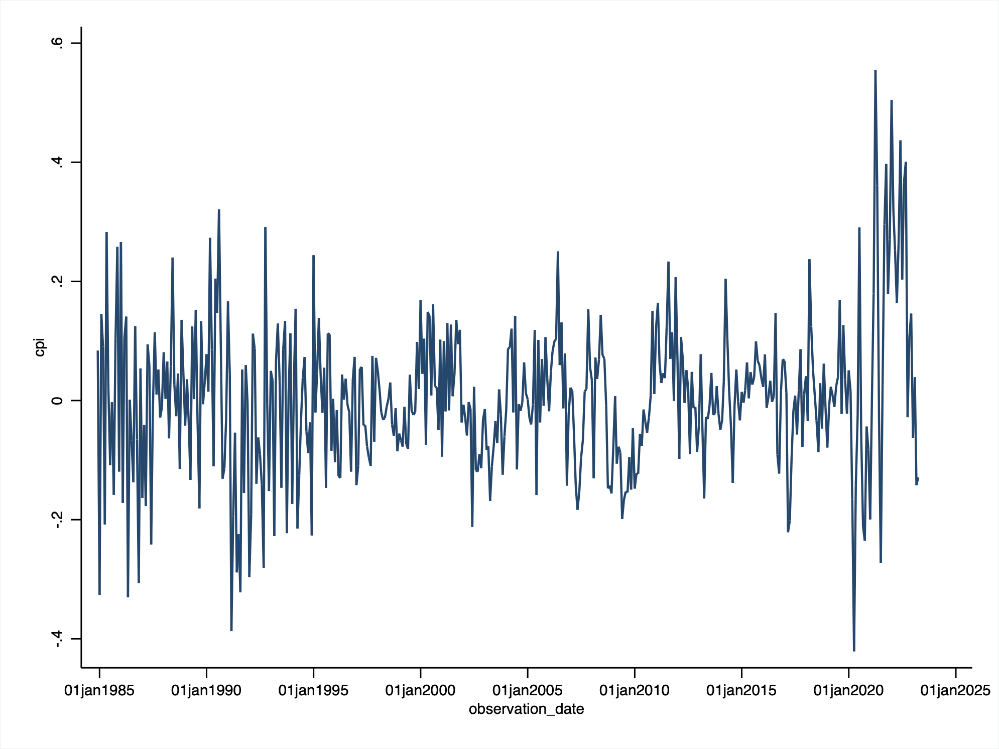
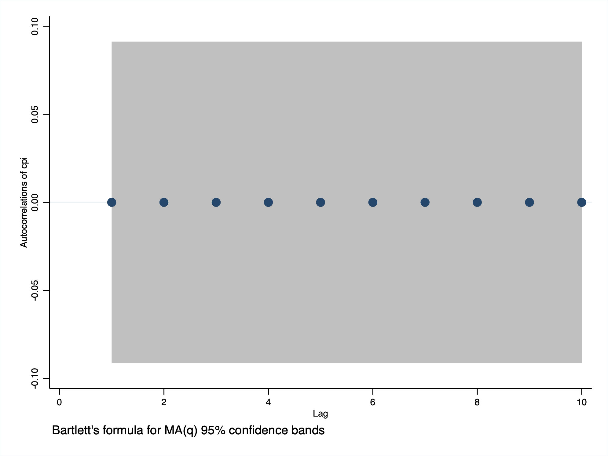
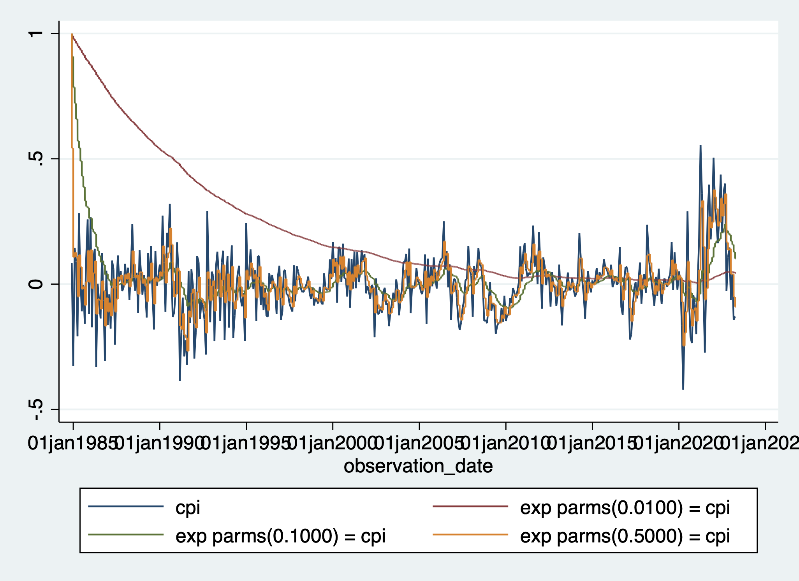

Exponential Smoothing
. import excel "/Users/simoneboschetti/Desktop/DATA/CORESTICKM159SFRBATL.xls", sheet("FRED Graph") cellrange(A11:C472) firs
> trow clear
(3 vars, 461 obs)
. rename CORESTICKM159SFRBATL_CHG cpi
. label variable cpi "cpi"
. tsset observation_date
Time variable: observation_date, 01dec1984 to 01apr2023, but with gaps
Delta: 1 day
 
Different Parameters
. tssmooth exponential A0=cpi, forecast(20) s0(1) parms(0.001)
exponential coefficient = 0.0010
sum-of-squared residuals = .83914
root mean squared error = .91605
. tssmooth exponential A1=cpi, forecast(20) s0(1) parms(0.01)
exponential coefficient = 0.0100
sum-of-squared residuals = 58.47
root mean squared error = .35614
. tssmooth exponential A2=cpi, forecast(20) s0(1) parms(0.1)
exponential coefficient = 0.1000
sum-of-squared residuals = 12.233
root mean squared error = .1629
. tssmooth exponential A3=cpi, forecast(20) s0(1) parms(0.5)
exponential coefficient = 0.5000
sum-of-squared residuals = 8.831
root mean squared error = .13841
